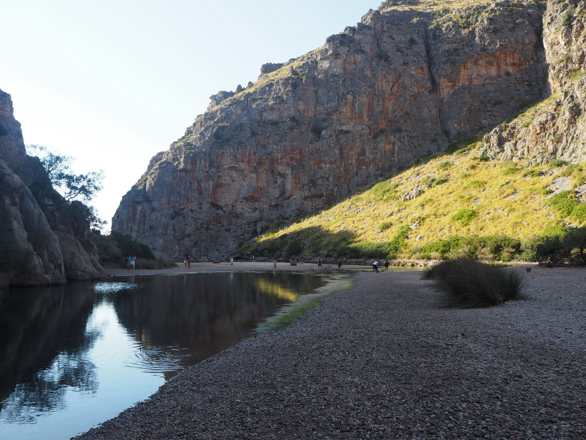

I feel strongly connected to this topic in many ways. For starters, the way we as a society are acting for own individual benefit and not as a community. We are social beings which are meant to rely on one another, yet we distrust others and sometimes have negative actions towards them. In this specific topic I feel really related to human insecurity and specially towards women. Coming from Mexico this is an everyday issue. My safety is something I've always been taught to protect. It's not something granted to me at birth, it's something I need to fight for every single day. I've tried to narrow this issue down to the main root but it is just such a complex subject that it can't be solved by just attacking one point. We need to start with education and values, with the cultural aspect that is intertwined with this violence towards others (specially women), distrust, self improvement over others development, and many other topics.
Growing up I realized I didn't want to live constrained and with so many boundaries stablished by this insecurity. I didn't want to miss visiting such amazing places in Mexico because the roads were unsafe or the town. I didn't want to rely on a man in order to roam free or to do just about anything, because that's usually how it is. I also didn't want to live with fear because that's just not living, but in the end that fear is deep inside you and you start distrusting others. I realized I started walking on the streets with an intimidating look just so no one would come close, to have an extra phone with me in case someone would steal mine, extra money hidden somewhere "just in case". It's very sad to have to be prepared for this type of situations, and also to not approach anyone or not be approachable just because of this attitude. I then came to the conclusion that we as a society are disconnected. Before there used to be neighborhoods and they all knew each other and most importantly, they trusted and relied on others.
"There is a strong sense of disconnection; between ourselves, with others and with nature."
The other great disconnection I dread is towards nature. We are so close yet so distant from it. It's as if people started to forget how to interact with it. People feel now more immediate connection towards technology than nature. I've found myself in times of need an answer in nature. Nature has this way of regenerating that is just so impressive. We feel sometimes so superior that we forget that nature has all the answers, it's just a matter of observing carefully and understanding. One of the things I believe connect this two main issues is the lack of empathy towards any other living thing that is not you. I believe that if we start by respecting nature we can evolve into respecting each other and making this a safer space to cohabitate.
I feel a bit lost on how to approach this subjects or if I'll even come close to fixing anything. But the thing is I don't expect to magically fix these things and dissappear them. I believe it takes a collaborative effort. I've always believed you should start with yourself in order to make a change. So for now I'm determined to analyze my everyday actions and see how they influence the way I relate to my environment and others. I want to have a better quality of life and for that I'm willing to fight. Starting from analyzing what needs to be changed, understanding systems and concepts I'm not familiar with, taking in new perspectives and creating discussion, and most importantly changing habits.